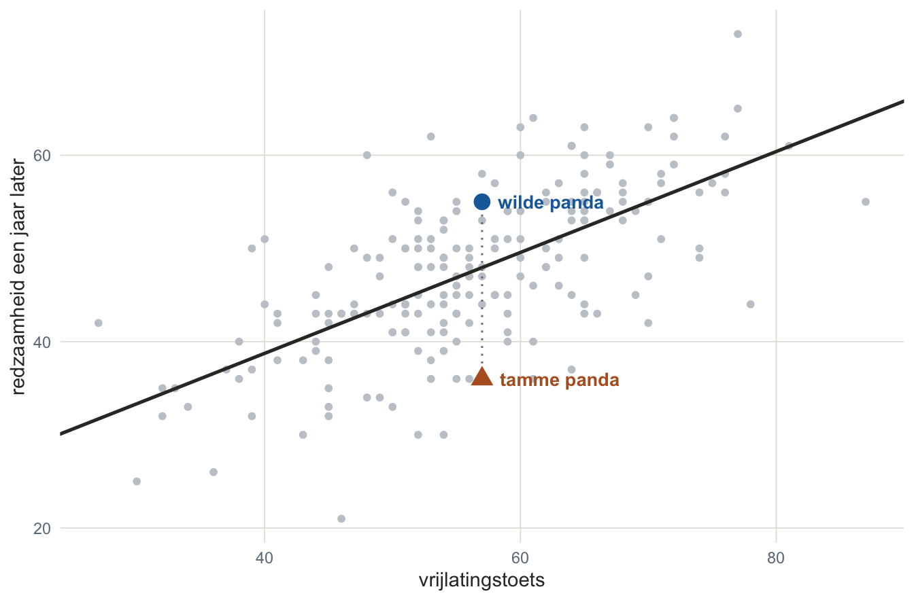
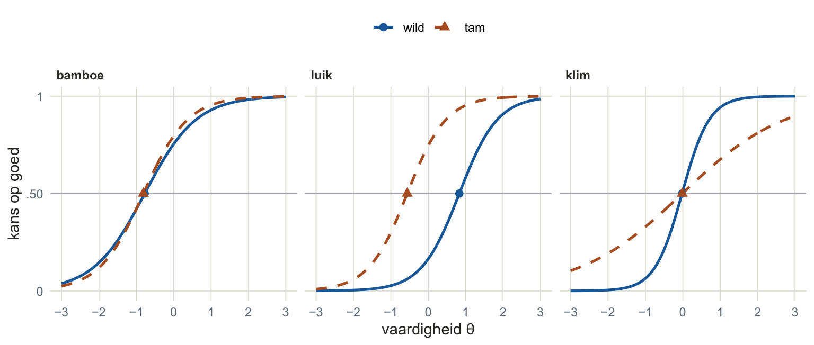
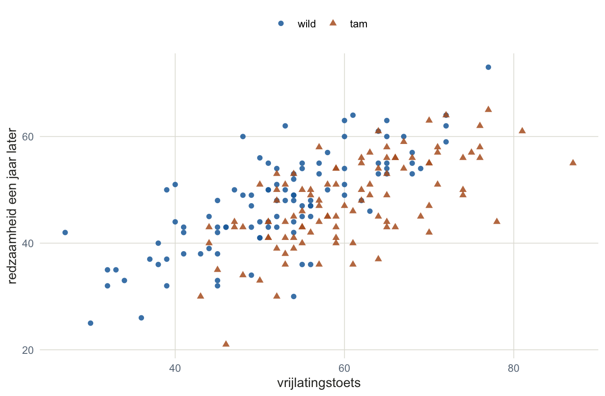
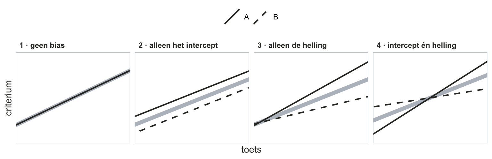
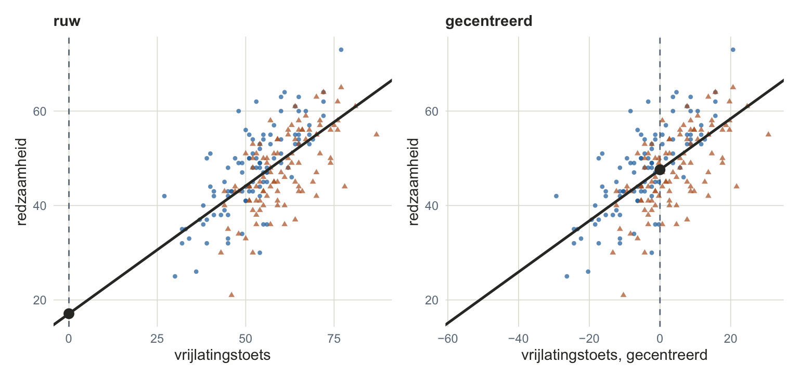
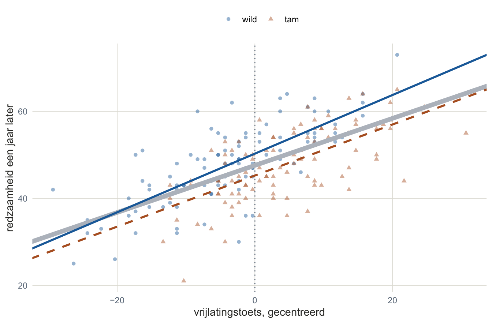
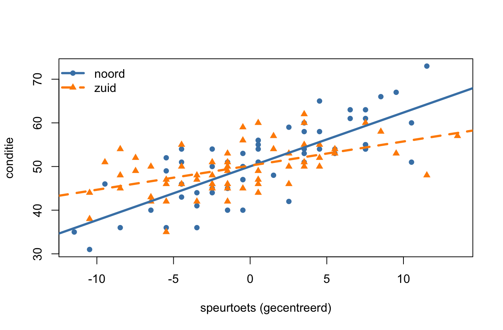
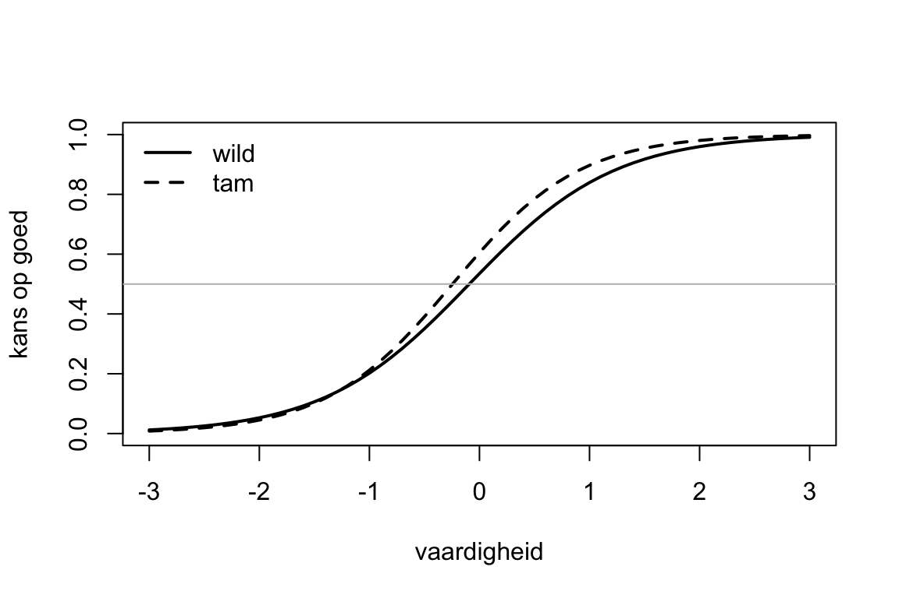

7. Test bias — dezelfde score, een ander verhaal
Het verhaal van dit thema
De bunzing had die nacht slecht geslapen. Een vraag die voor de ene soort makkelijker is dan voor de andere. Hij liep ’s ochtends naar de opvang aan de rand van het bos, waar de panda’s zaten.
In de opvang woonden twee soorten panda’s. Tamme, die er waren opgegroeid. En wilde, die gewond waren binnengebracht en weer beter waren. Voordat een panda terug het bos in mocht, deed hij de vrijlatingstoets. Wie hoog scoorde, mocht gaan.
Bij het hek zaten er twee naast elkaar. Een wilde en een tamme.
“Wat had jij?” vroeg de bunzing aan de wilde.
“57,” zei de wilde panda.
“En jij?”
“Ook 57,” zei de tamme. “Precies hetzelfde.”
“Dan doe jij het in het bos straks net zo goed als hij,” zei de bunzing.
De wilde panda snoof. “Hij heeft die toets elke week geoefend. Dat luik, elke dag open en dicht. Ik zag hem vandaag voor het eerst.” Hij keek naar het bos. “Zelfde getal. Ander verhaal.”
De bunzing schreef beide namen op. Een jaar later kwam hij terug om te kijken hoe redzaam ze waren.
Wie denk je dat het beter deed?
Dit thema gaat over die vraag: twee dieren met dezelfde score, en een toets die voor het ene dier iets anders zegt dan voor het andere. Dat heet test bias.
Drie hoofdvragen:
- Wat is bias, en waar kan hij zitten? In de antwoorden zelf, in één item, of in wat de score voorspelt.
- Werkt één item voor beide groepen hetzelfde? Dat zie je aan de itemcurven uit thema 6, één per groep.
- Voorspelt de score voor beide groepen even goed? Dat zie je aan twee regressielijnen, één per groep, en aan één model dat ze allebei trekt.
Voordat we beginnen
Bias is vertekening
Het Engelse woord bias heeft een goed Nederlands woord: vertekening. “Als je naar de score kijkt, het beeld, dan geeft dat een vertekend beeld van de werkelijkheid, van de persoon. Dat is de bias, een vertekening. Je kijkt verkeerd. Je ziet niet wat er echt aan de hand is.”
Twee dingen zijn géén bias, en het is goed die meteen opzij te zetten.
- Ruis. Niemand ligt precies op een regressielijn. Dat één panda boven de lijn ligt, is gewoon toeval. Bias is stelselmatig: de toets zit voor een héle groep steeds dezelfde kant op naast.
- Een echt verschil. Als tamme panda’s gemiddeld minder redzaam zijn dan wilde, dan is dat geen fout van de toets. Een toets die dat verschil laat zien, meet goed. Bias is pas het verschil dat er bij dezelfde score nog is.
Bias kan op drie plekken zitten. Je collegesheets en je werkboek gebruiken hier de Engelse namen; die staan erbij.
| waar | de vraag | hoe je het ziet | in dit thema |
|---|---|---|---|
| in de antwoorden response bias | Antwoordt iemand op iets anders dan op de vraag? Sociaal wenselijk, altijd ja, altijd het uiterste. | aan de manier van antwoorden, los van de inhoud | kort, met potlood |
| in de items item bias, construct bias | Meten de items in beide groepen hetzelfde? | binnen de toets: de items per groep vergelijken, bijvoorbeeld met itemcurven | met de curven uit thema 6 |
| in de voorspelling predictive bias | Voorspelt de score een criterium in beide groepen even goed? | buiten de toets: een regressielijn per groep | uitgebreid, met potlood en in R |
De tweede en de derde zijn twee verschillende vragen, en dat onderscheid draagt het hele hoofdstuk. Bij itembias kijk je in de toets: is dit item voor een wilde panda even moeilijk als voor een tamme die even vaardig is? Bij predictiebias kijk je naar buiten: als twee panda’s dezelfde toetsscore hebben, zijn ze dan een jaar later ook even redzaam? Een toets kan de ene vraag goed doorstaan en op de andere zakken.
Bij beide hoort een eigen rijtje namen. Die komen pas als je het plaatje gezien hebt, en aan het eind van het voorspellingsdeel leg je de twee rijtjes naast elkaar.
Zo loopt het hoofdstuk. Eerst één plaatje, en dan pas de woorden: zo gaat het bij elk nieuw stuk. Je begint met de vraag wie een regressielijn overschat en wie hij onderschat. Dan kort de vertekening in de antwoorden. Dan de items, met de curven die je uit thema 6 kent. Het grootste stuk is de voorspelling, in R. Daarna oefenen.
Eén lijn, twee panda’s
Wie overschat de lijn, en wie onderschat hij?
Dit is de opvang, alle 200 panda’s. Op de liggende as de vrijlatingstoets, op de staande as hoe redzaam ze een jaar later waren. De lijn is de regressielijn door iedereen. De twee panda’s van het hek zijn de grote stippen.
Wat zie je? De lijn geeft de twee panda’s dezelfde voorspelling: ze staan op dezelfde plek op de toets. Wie van de twee overschat de lijn, en wie onderschat hij? Kijk voor je verder leest.
OpgeletAntwoord — open na je eigen poging
De lijn zegt voor allebei 47.9. De wilde panda haalde 55: de lijn zit onder hem, dus het model onderschat de wilde panda. De tamme panda haalde 36: de lijn zit boven hem, dus het model overschat de tamme.
Het verschil tussen echt en voorspeld heet het residu: bij de wilde panda 7.1, bij de tamme −11.9. Een positief residu is iemand die het model onderschat, een negatief residu iemand die het overschat.
Lees het altijd vanuit het model. Niet “de wilde panda is goed”, maar: de lijn zit onder hem. “Wie ten opzichte van wie? Dat vind ik eigenlijk de belangrijkste les.” Die vraag stel je in dit hoofdstuk bij elk plaatje opnieuw, ook als het geen regressielijn is maar een itemcurve.
Bij twee panda’s is dit nog gewoon ruis. Iedereen ligt een beetje naast de lijn. Het wordt pas bias als het stelselmatig gebeurt: als de lijn de tamme panda’s als groep te hoog inschat en de wilde als groep te laag. Of dat zo is, ga je in het derde deel uitzoeken. Eerst de andere twee plekken waar vertekening kan zitten.
Vertekening in de antwoorden
Antwoorden op iets anders dan de vraag
Soms zit de vertekening niet in de toets maar in de manier waarop iemand antwoordt. Dan geeft iemand een antwoord dat niet over de vraag gaat, maar over iets anders: hoe hij gezien wil worden, of hoe hij nu eenmaal antwoordt. Dat heet responsbias response bias. Het speelt vooral bij vragenlijsten, waar geen goed of fout antwoord is.
| soort | wat er gebeurt | voorbeeld |
|---|---|---|
| ja-zeggen acquiescence | iemand is het overal mee eens, wat er ook staat (de omgekeerde vorm: overal nee) | “ik ben vaak moe” én “ik voel me zelden moe”: allebei eens |
| het uiterste of het midden extreme / moderate responding | iemand kiest altijd de buitenste of altijd de middelste antwoordmogelijkheid | op elke vraag een 1 of een 5 |
| sociaal wenselijk social desirability | iemand antwoordt zoals het hoort, niet zoals het is; bewust (zich mooier voordoen) of zonder het te merken (zichzelf mooier zien) | “ik word nooit boos” |
| slechter voordoen malingering | iemand doet zich met opzet slechter voor dan hij is, omdat het hem iets oplevert | klachten aandikken voor een uitkering |
| slordig of willekeurig careless / random responding | iemand leest de vragen niet, of klikt maar wat | dezelfde vraag twee keer, twee tegengestelde antwoorden |
| gokken guessing | bij een toets met goed en fout: iemand die het niet weet, heeft het toch goed | bij vier keuzes een kans van .25 zonder iets te weten |
Wat je ertegen doet, valt in drie bakken:
- De situatie. Anoniem laten antwoorden, vertellen dat er geen goede of foute antwoorden zijn, de vragenlijst niet te lang maken. Wie zich veilig voelt en niet moe is, antwoordt eerlijker en zorgvuldiger.
- De vragen. Vragen in beide richtingen stellen (een deel omgekeerd geformuleerd, zoals in thema 2), zodat ja-zeggen elkaar opheft. Neutraal formuleren, zodat er geen wenselijk antwoord te zien is. Of laten kiezen tussen twee uitspraken die even wenselijk klinken.
- Opsporen. Een aparte schaal meenemen die meet hoe sociaal wenselijk iemand antwoordt, of controlevragen die iedereen hetzelfde hoort te beantwoorden. Twee vragen die hetzelfde vragen, tegengesteld beantwoord: dan is er niet gelezen.
Hier rekenen we niets uit. Responsbias zie je aan de antwoorden van één persoon, niet aan het verschil tussen twee groepen. Daarom staat hij apart van de rest van het hoofdstuk.
OpmerkingVraag — Pen-en-papier
Welke soort responsbias is dit?
a) Een sollicitant vult een persoonlijkheidsvragenlijst in en geeft op elke vraag over betrouwbaarheid het hoogste antwoord.
b) Op een vragenlijst over somberheid staan tien vragen in de somber-richting en tien in de opgewekte richting. Een deelnemer is het met alle twintig eens.
c) Een deelnemer heeft een vragenlijst van tachtig vragen in vier minuten ingevuld. Twee vragen die bijna hetzelfde vragen, heeft hij tegengesteld beantwoord.
d) Wat zou je bij b) aan de vragenlijst zelf kunnen veranderen om er minder last van te hebben? En zit dat er al in?
OpgeletAntwoord — open na je eigen poging
a) Sociaal wenselijk antwoorden: hij antwoordt zoals een goede sollicitant hoort te zijn. Dat hij elke keer het hoogste antwoord kiest, kán ook het uiterste kiezen zijn; dat zie je pas als hij ook bij vragen waar niets wenselijk aan is, steeds het uiterste kiest.
b) Ja-zeggen. Wie het met “ik ben vaak somber” én met “ik ben vaak opgewekt” eens is, antwoordt niet op de inhoud.
c) Slordig of willekeurig antwoorden. De tijd (drie seconden per vraag) en de twee tegengestelde antwoorden wijzen allebei die kant op.
d) Er hoeft niets te veranderen: de vragenlijst heeft al vragen in beide richtingen, en dat is precies de maatregel tegen ja-zeggen. Tel je de omgekeerde vragen om, dan valt het ja-zeggen van deze deelnemer tegen zichzelf weg: tien keer te hoog, tien keer te laag. Daardoor zie je het ook: zijn antwoorden spreken elkaar tegen.
In de items: werkt een item voor iedereen hetzelfde?
Twee curven per item, één per groep
De vrijlatingstoets heeft acht items. Een is goed, een is fout.
| item | de opdracht |
|---|---|
geur |
Ruik waar het voer ligt. |
bamboe |
Kies de verse bamboe uit drie stengels. |
luik |
Open het voerluik. |
water |
Vind de drinkplek. |
klim |
Klim in de boom tot de eerste tak. |
schuil |
Zoek een schuilplek als het gaat regenen. |
nest |
Bouw een slaapnest van takken. |
spoor |
Volg het spoor van een andere panda. |
In de loop van een paar jaar hebben 400 wilde en 400 tamme panda’s de toets gedaan. In thema 6 tekende je per item één curve: de kans op goed, bij elke vaardigheid θ. Hier teken je er per item twee, een voor de wilde en een voor de tamme panda’s. Hieronder drie van de acht.

Wat zie je? Kijk per item op hoogte .50, en kijk dan naar een staande lijn: neem één θ, dus twee panda’s die even vaardig zijn. Hebben ze even veel kans op goed? Overal? En wie heeft het voordeel, waar?
OpgeletAntwoord — open na je eigen poging
bamboe. De twee curven liggen bijna op elkaar. Een wilde en een tamme panda die even vaardig zijn, hebben even veel kans op goed. Dit item werkt voor beide groepen hetzelfde.
luik. De oranje curve ligt over de hele breedte links van de blauwe, en ze zijn even steil. Op hoogte .50 staat de tamme panda bij , de wilde bij . Neem een staande lijn waar je wilt: de tamme panda heeft altijd meer kans dan een wilde die even vaardig is. Het voordeel wijst overal dezelfde kant op. Het item is voor tamme panda’s makkelijker, niet omdat ze vaardiger zijn, maar omdat ze dat luik elke dag openen.
klim. Beide curven gaan door ongeveer hetzelfde punt op hoogte .50 (β van −0.02 en −0.01), maar de blauwe is veel steiler ( tegen 0.72). Links van dat punt ligt oranje hoger: een zwakke tamme panda heeft meer kans dan een even zwakke wilde. Rechts ligt blauw hoger: een sterke wilde panda heeft meer kans dan een even sterke tamme. Het voordeel slaat om. Voor tamme panda’s zegt dit item bijna niets over hoe vaardig ze zijn: in de opvang klimt iedereen in hetzelfde rek.
Wat je net deed, heet differential item functioning, kortweg DIF: een item werkt anders voor twee groepen die even vaardig zijn. Die laatste vier woorden zijn het hele punt. Dat tamme panda’s luik vaker goed hebben, is op zich niets: misschien zijn ze gewoon vaardiger. Pas als het verschil er bij dezelfde θ nog is, zit het in het item.
En het patroon kent twee vormen, met de letters uit thema 6:
- Uniforme DIF: alleen de moeilijkheid β verschilt. De curven zijn even steil en schuiven alleen opzij. Ze snijden elkaar niet, dus het voordeel ligt bij elke θ bij dezelfde groep, overal even ver. Dat is
luik. - Niet-uniforme DIF: de discriminatie α verschilt. De ene curve is steiler dan de andere, dus ergens snijden ze elkaar, en daar slaat het voordeel om. Dat is
klim.
Uniform betekent hier: het verschil wijst overal dezelfde kant op. Dat woord kom je straks bij de voorspelling weer tegen, met dezelfde betekenis. Het woord DIF niet: dat is alleen voor items.
WaarschuwingTwee keer een β, twee verschillende dingen
β is hier de moeilijkheid van een item, zoals in thema 6. In het voorspellingsdeel hieronder komen regressiegewichten, en die schrijf je met een Latijnse b: , , , . Een regressiegewicht dat je uit data hebt geschat, is geen β. (En in SPSS heet een gestandaardiseerd regressiegewicht Beta: ook dat is iets anders.)
Zo doe je het in R
Op je collegesheets staat het in twee stappen: fit een 2PL-model op elke groep apart, en vergelijk de parameters. Verschilt alleen β: uniforme DIF. Verschilt α: niet-uniforme DIF. Geen verschil: geen DIF.
library(ltm)
load("data/panda_items.RData")
items <- c("geur", "bamboe", "luik", "water", "klim", "schuil", "nest", "spoor")
wild <- panda_items[panda_items$herkomst == 1, items] # 1 = wild
tam <- panda_items[panda_items$herkomst == 2, items] # 2 = tam
fit_wild <- ltm(wild ~ z1)
fit_tam <- ltm(tam ~ z1)Leg de twee coef()-tabellen naast elkaar. Dffclt is β, Dscrmn is α.
| Moeilijkheid en discriminatie per item, apart geschat per groep | ||||
| item |
moeilijkheid (Dffclt)
|
discriminatie (Dscrmn)
|
||
|---|---|---|---|---|
| wild | tam | wild | tam | |
| geur | −1.31 | −1.29 | 1.63 | 1.90 |
| bamboe | −0.77 | −0.81 | 1.45 | 1.68 |
| luik | 0.83 | −0.56 | 1.96 | 1.92 |
| water | −0.09 | −0.24 | 1.51 | 1.74 |
| klim | −0.02 | −0.01 | 2.73 | 0.72 |
| schuil | 0.49 | 0.38 | 1.63 | 1.59 |
| nest | 1.02 | 1.22 | 1.14 | 1.13 |
| spoor | 1.50 | 1.63 | 1.47 | 1.40 |
| Note. Een twee-parametermodel (2PL) per groep, met ltm(): 400 wilde en 400 tamme panda’s. | ||||
Zes van de acht items liggen per groep dicht bij elkaar. Twee springen eruit: bij luik verschilt de moeilijkheid ruim (0.83 tegen −0.56), bij klim de discriminatie (2.73 tegen 0.72).
Hoe groot moet een verschil zijn? Zelfs bij een item zonder DIF liggen twee schattingen nooit precies gelijk: elke groep is een steekproef. Dat zie je hierboven ook, bij de zes rustige items. Of een verschil groter is dan toeval, kun je toetsen; dat doen we hier niet (zie “Wat blijft liggen”). Hier lees je de tabel met je ogen, en kijk je naar de curven.
Een curve per groep teken je zelf uit de twee rijtjes getallen. Dit tekent die van klim:
cw <- coef(fit_wild); ct <- coef(fit_tam)
theta <- seq(-3, 3, by = 0.1)
plot(theta, plogis(cw["klim", "Dscrmn"] * (theta - cw["klim", "Dffclt"])),
type = "l", ylim = c(0, 1), xlab = "vaardigheid", ylab = "kans op goed")
lines(theta, plogis(ct["klim", "Dscrmn"] * (theta - ct["klim", "Dffclt"])), lty = 2)
abline(h = 0.5, col = "grey")
legend("topleft", legend = c("wild", "tam"), lty = c(1, 2), bty = "n")plogis() is de S-curve uit thema 6, , in één functie.
OpmerkingVerdieping, niet voor je tentamen — waarom je de twee curven hier zomaar naast elkaar mag leggen
Een 2PL-model zet de vaardigheid van zijn groep op een lat met gemiddelde en standaarddeviatie . Fit je het per groep apart, dan krijgt elke groep zijn eigen lat. Zijn de groepen gemiddeld even vaardig, dan vallen die twee latten samen, en mag je de curven gewoon over elkaar leggen. Bij de panda’s is dat zo: de data zijn zo gemaakt.
Zijn de groepen níét even vaardig, dan schuift de ene lat ten opzichte van de andere, en lijkt elk item van de zwakkere groep makkelijker dan het is. Dan moet je de latten eerst gelijk trekken, met items waarvan je weet dat ze geen DIF hebben (ankeritems) of met één model voor beide groepen tegelijk. Dat staat in “Wat blijft liggen”.
Zonder curven: de klassieke route
Je kunt hetzelfde ook zonder IRT bekijken, met de klassieke testtheorie. Op je collegesheets gaat dat zo:
- Tel voor elke panda de items op: zijn somscore.
- Neem de laagst scorende kwart en de hoogst scorende kwart, over alle panda’s samen.
- Kijk binnen elke scoregroep of wilde en tamme panda’s het item even vaak goed hebben.
De somscore speelt hier de rol van θ: panda’s in dezelfde scoregroep zijn ongeveer even vaardig. Hebben ze binnen dezelfde scoregroep het item toch niet even vaak goed, dan verklaart de scoregroep het verschil niet, en zit het in het item.
Bij acht items is de somscore een heel getal, dus precies een kwart lukt niet; de grens ligt zo dicht mogelijk bij een kwart. De laagste groep zijn de 241 panda’s met 2 of minder goed (een proportie van .30 van alle 800), de hoogste de 199 met 6 of meer (.25).
| Proportie goed per scoregroep en per groep | ||
| scoregroep | wild | tam |
|---|---|---|
| bamboe | ||
| laag | .35 | .27 |
| hoog | .98 | .98 |
| luik | ||
| laag | .01 | .15 |
| hoog | .77 | .96 |
| klim | ||
| laag | .08 | .14 |
| hoog | .99 | .82 |
| Note. Laag en hoog: de laagst en de hoogst scorende panda’s op de somscore van de acht items, over beide groepen samen, zo dicht mogelijk bij een kwart: 241 met 2 of minder goed, 199 met 6 of meer, van de 800. | ||
Hetzelfde verhaal als de curven, alleen grover. Bij bamboe liggen wild en tam in beide scoregroepen dicht bij elkaar. Bij luik hebben tamme panda’s het in beide scoregroepen vaker goed: dat is de kant op die de curven ook lieten zien, overal dezelfde. Bij klim slaat het om: in de laagste groep hebben de tamme panda’s het vaker goed, in de hoogste de wilde.
Het verschil tussen hoog en laag heet op je collegesheets de discriminatie-index van een item: hoeveel beter de sterke panda’s het doen dan de zwakke. Bij klim is die bij de wilde panda’s .91 en bij de tamme .68: het item scheidt bij tamme panda’s minder goed, net als de flauwe curve. Maar de route is grof: de index hangt ook af van waar een item ligt ten opzichte van de twee scoregroepen. De curven vergelijken bij elke θ apart, en hebben daar geen last van.
Met een factoranalyse
Een derde route kende je al uit thema 5: doe de factoranalyse apart in elke groep, en vergelijk. Zijn er evenveel factoren? Laden dezelfde items op dezelfde factor? Zijn de ladingen even groot? Is het antwoord drie keer ja, dan meet de toets in beide groepen hetzelfde, op dezelfde manier. Verschilt er iets, dan is dat bias in de items. Dat rekenen we hier niet uit; het gereedschap is dat van thema 5, twee keer.
In de voorspelling: zegt dezelfde score hetzelfde?
Twee groepen, één lijn — of twee
Terug naar de 200 panda’s van het begin en de vraag van het hek. (De 800 van de items waren een andere groep: alle panda’s die de toets in een paar jaar deden. Van deze 200 weet de bunzing ook hoe redzaam ze een jaar later waren.) De vrijlatingstoets is de toets (de voorspeller, X). De redzaamheid een jaar later is het criterium (wat de toets moet voorspellen, Y). Dat een toets een criterium voorspelt, was in thema 3 de criteriumvaliditeit. Nu komt er één vraag bij: voorspelt de toets voor wilde en tamme panda’s even goed?
Eerst kijken
Nog geen model. Alleen de wolk: elke panda een stip, wilde panda’s blauwe rondjes, tamme oranje driehoekjes.

Wat zie je? Loopt de wolk omhoog? En liggen de oranje driehoekjes ergens anders dan de blauwe rondjes: hoger, lager, verder naar links of naar rechts?
OpgeletAntwoord — open na je eigen poging
De wolk loopt duidelijk omhoog: een panda die hoger scoort op de toets, is een jaar later gemiddeld redzamer (r(toets, redzaamheid) = .66).
De driehoekjes liggen verder naar rechts: tamme panda’s scoren hoger op de toets, gemiddeld 60.50 tegen 52.16. Maar ze liggen niet hoger: op redzaamheid halen tamme panda’s gemiddeld 47.69 en wilde 47.47. Vrijwel hetzelfde.
Dat is nog géén bias, en ook geen bewijs dat er geen is. Bias is niet “de groepen verschillen”, maar: bij dezelfde toetsscore verschillen ze nog steeds. Kijk naar één staande strook in de wolk: liggen de driehoekjes daarin lager dan de rondjes? Dat is wat het model gaat uitzoeken.
Vier plaatjes
Voor je gaat rekenen: welke vormen kan het hebben? Hieronder vier mogelijkheden, telkens met twee groepen, A en B. De grijze lijn is de gezamenlijke lijn: de regressielijn door iedereen samen, zonder op de groep te letten. Hier ligt hij er precies tussenin. Dat geldt bij twee even grote groepen die ook op de toets even hoog en even gespreid scoren; bij de panda’s is dat niet zo, en dat zie je straks.

Wat zie je? Denk bij elk plaatje vanuit de grijze lijn. Wie overschat hij, en wie onderschat hij? Is dat bij elke toetsscore hetzelfde?
OpgeletAntwoord — open na je eigen poging
- Geen bias. De groepslijnen vallen samen met de gezamenlijke lijn. Dezelfde toetsscore, dezelfde voorspelling, en die klopt voor beide groepen.
- Alleen het intercept verschilt. De lijnen lopen evenwijdig. De grijze lijn zit onder A, dus hij onderschat A, en boven B, dus hij overschat B. Evenwijdig betekent: bij elke toetsscore even ver ernaast. “Hoe kan je vertellen aan een blinde dat die mate van over- en onderschatting altijd hetzelfde is?” Omdat de afstand tussen twee evenwijdige lijnen overal gelijk is. Dat is uniforme predictiebias.
- Alleen de helling verschilt. Links liggen de lijnen op elkaar, naar rechts lopen ze uit elkaar. De grijze lijn onderschat A en overschat B, en hoe hoger de toetsscore, hoe meer.
- Intercept én helling verschillen. Links van het snijpunt onderschat de grijze lijn B en overschat hij A. Rechts ervan is het andersom. Wie benadeeld wordt, hangt af van de toetsscore.
Plaatje 3 en 4 zijn niet-uniform: hoeveel de grijze lijn ernaast zit, hangt af van waar je op de toets kijkt.
Zeg “niet evenwijdig”, niet “ze kruisen”. “Iedereen zegt kruisen als het over dit gaat. Ik zeg gewoon, nee, het is niet parallel. En niet parallelle lijnen zullen altijd ergens kruisen, maar misschien niet in je plaatje.” Het criterium voor slopebias is dat de lijnen niet evenwijdig lopen. Plaatje 3 en 4 zijn dus allebei slopebias.
Waar ze kruisen doet er wél toe voor de gevolgen, en daarom vragen je collegesheets ernaar: kruisen de lijnen binnen het bereik van de scores die je echt hebt? Ligt het snijpunt op de rand van je data of erbuiten, zoals in plaatje 3 (de lijnen komen uit één punt op de linkerrand), dan ligt binnen de data steeds dezelfde groepslijn onder de andere, alleen niet overal even ver. Ligt het snijpunt midden in de data, zoals in plaatje 4, dan slaat het om: bij lage scores ligt de lijn van de ene groep onder, bij hoge die van de andere. Niet-uniform betekent dus niet altijd dat het omslaat; het betekent dat het verschil tussen de groepslijnen niet overal even groot is. Wie de grijze lijn benadeelt, lees je in deze vier plaatjes af aan de groepslijnen, omdat hij er precies tussenin ligt. Bij de panda’s ligt hij er niet overal tussenin, en dan gaat dat aflezen niet meer zomaar.
Je collegesheets maken nog een keuze: tussen plaatje 3 en 4 maken ze geen onderscheid. Zodra de hellingen verschillen, krijgt elke groep een eigen lijn, met een eigen intercept én een eigen helling. Verschillen alleen de intercepten (plaatje 2), dan krijgt elke groep een eigen intercept, met dezelfde helling. Je werkboek vraagt de twee wél apart: is er interceptbias, en is er slopebias? Dat is geen tegenspraak. Je toetst ze apart (de dummy en de interactie, zo meteen), en noemt wat significant is. Is de interactie significant, dan krijgt elke groep in de voorspelformule een eigen lijn, wat er ook uit de dummy komt.
Stap 1 — centreren
Het model dat zo komt, rekent met het intercept: de voorspelde Y bij X = 0. En daar zit een probleem. Kijk links naar de wolk zoals hij is, rechts naar dezelfde wolk nadat van elke toetsscore het gemiddelde (56.33) is afgetrokken. De twee liggende assen zijn precies even breed, zodat je de hellingen eerlijk kunt vergelijken.

Wat zie je? Welke lijn is steiler, links of rechts? En waar raakt de lijn de stippellijn bij X = 0?
OpgeletAntwoord — open na je eigen poging
Even steil: links en rechts is de helling 0.54. “Die wolk schuift gewoon op naar links, maar die wolk gaat niet opeens stijler of minder stijl lopen.”
Het intercept is de voorspelde redzaamheid bij X = 0. Links is dat een panda met een toetsscore van 0, en die bestaat niet: de laagste score in de data is 27. Het intercept ligt daar op 17.09, ver onder alles wat je in de wolk ziet. Rechts is X = 0 een panda met een gemiddelde toetsscore, en het intercept (47.58) is gewoon zijn voorspelde redzaamheid.
Dat is centreren: van elke score het gemiddelde aftrekken. “Ik neem x, de oude score, min x gemiddeld. Dus ik kijk gewoon naar de afstanden van de score naar het gemiddelde. […] hebben we een betekenisvolle 0. Want als iemand gecentreerd 0 scoort, wat weten we dan? Is die gemiddeld.” Waarom dat er hier zo toe doet, zie je straks in één getal: zonder centreren meet het model het verschil tussen de groepen bij een toetsscore van 0, en die heeft niemand.
load("data/panda_opvang.RData")
panda <- panda_opvang
panda$toets_c <- as.numeric(scale(panda$toets, center = TRUE, scale = FALSE))
mean(panda$toets) # dit gaat eraf[1] 56.33round(mean(panda$toets_c), 10) # het nieuwe gemiddelde: 0[1] 0c(sd(panda$toets), sd(panda$toets_c)) # de spreiding blijft gelijk[1] 10.59824 10.59824scale() met center = TRUE, scale = FALSE trekt van elke score het gemiddelde af. Meer niet: hij deelt niet door de standaarddeviatie. Dat zou een z-score maken, die zegt hoeveel standaarddeviaties je van het gemiddelde af zit. De gecentreerde score zegt hoeveel punten. as.numeric() staat eromheen omdat scale() een matrix teruggeeft.
Stap 2 — een dummy maken
In het bestand staat herkomst als 1 (wild) en 2 (tam). Dat mag, want het is maar nominaal; een 3 en een 5 hadden net zo goed gekund. Voor regressie wil je 0 en 1. “Kies altijd nulletjes en eendjes.”
Zo’n 0-1-variabele heet een dummy. De groep met de 0 is de referentiegroep, hier de wilde panda’s. Noem de dummy naar de groep die de 1 krijgt: tam = 1 betekent je bent tam, tam = 0 je bent het niet. Een naam als groep2 laat de lezer raden welke groep de 1 is.
panda$tam <- ifelse(panda$herkomst == 2, 1, 0)
table(herkomst = panda$herkomst, tam = panda$tam) # elke 1 wordt 0, elke 2 wordt 1 tam
herkomst 0 1
1 100 0
2 0 100ifelse() heeft drie argumenten: een controle (herkomst == 2: is deze panda tam?), wat er komt als het klopt (1), en wat er komt als het niet klopt (0). Omdat herkomst alleen 1 en 2 is, kan het ook korter: panda$herkomst - 1.
WaarschuwingEen formule met 0 en 1 klopt pas ná de dummy
Staat de groep in je bestand als 1 en 2, en rekent een opgave met “wild = 0” en “tam = 1”, dan geldt die opgave voor de dummy die je net maakte, niet voor de variabele uit het bestand. Zet je de ruwe 1-en-2-variabele in het model, dan krijg je andere getallen voor het intercept en de helling.
Stap 3 — de interactie
De interactie is gewoon een product: gecentreerde toetsscore keer dummy.
panda$toets_x_tam <- panda$toets_c * panda$tam
head(panda[panda$tam == 0, ], 3) # wild: altijd 0 panda herkomst toets redzaam toets_c tam toets_x_tam
1 p001 1 36 26 -20.33 0 0
2 p002 1 51 44 -5.33 0 0
3 p003 1 45 38 -11.33 0 0head(panda[panda$tam == 1, ], 3) # tam: gelijk aan toets_c panda herkomst toets redzaam toets_c tam toets_x_tam
101 p101 2 58 51 1.67 1 1.67
102 p102 2 71 51 14.67 1 14.67
103 p103 2 52 39 -4.33 1 -4.33Bij wilde panda’s is de nieuwe kolom altijd nul, want nul keer iets is nul. Bij tamme panda’s ís hij hun gecentreerde toetsscore. Daardoor kan het model voor tamme panda’s een extra stukje helling bijtellen dat wilde panda’s niet krijgen.
Het model, en twee lijnen eruit
Even terug naar de vraag, want die raak je in de stappen makkelijk kwijt: zit er bij dezelfde toetsscore nog een verschil tussen wilde en tamme panda’s? Daarvoor is dit model.
Met die drie kolommen schrijf je het hele model op. Met de letters van je collegesheets, met Z voor de groep:
Je werkboek schrijft dezelfde vier gewichten als tot en met ; het nummer betekent hetzelfde. Een gewicht dat je uit data schat, is een Latijnse letter, geen β.
Schrijf het model nu per groep uit, door de dummy in te vullen. “Zodat je ook kan zien uiteindelijk, wie is er stijler, wie is er minder stijl. Want als ik zo hiernaar kijk, dan vind ik dat best lastig.”
- wilde panda’s (Z = 0). Nul keer iets is nul, dus twee stukken vallen weg:
- tamme panda’s (Z = 1). Eén keer iets is dat iets zelf. Neem samen wat bij elkaar hoort, intercept bij intercept en helling bij helling:
Leg de twee naast elkaar, en je ziet wat elk gewicht doet:
| gewicht | wat het is | toets je het, dan vraag je |
|---|---|---|
| het intercept van de wilde panda’s: hun voorspelde redzaamheid bij een gemiddelde toetsscore | — | |
| de helling van de wilde panda’s | — | |
| het verschil in intercept: tam min wild, bij X = 0 | is er interceptbias? | |
| het verschil in helling: tam min wild | is er slopebias? |
is níét de helling van de tamme panda’s. Die is : helling van de wilde plus het verschil.
Model 1 — één lijn voor iedereen
Eerst het model zonder groep: de gezamenlijke lijn.
model1 <- lm(redzaam ~ toets_c, data = panda)
summary(model1)
Call:
lm(formula = redzaam ~ toets_c, data = panda)
Residuals:
Min 1Q Median 3Q Max
-20.9895 -3.6955 0.0516 4.3721 16.9281
Coefficients:
Estimate Std. Error t value Pr(>|t|)
(Intercept) 47.58000 0.46694 101.90 <2e-16 ***
toets_c 0.54119 0.04417 12.25 <2e-16 ***
---
Signif. codes: 0 '***' 0.001 '**' 0.01 '*' 0.05 '.' 0.1 ' ' 1
Residual standard error: 6.604 on 198 degrees of freedom
Multiple R-squared: 0.4312, Adjusted R-squared: 0.4284
F-statistic: 150.1 on 1 and 198 DF, p-value: < 2.2e-16Lees het in vier stappen, eerst het model als geheel en dan de gewichten:
- R² = .43: de toets verklaart .43 van de verschillen in redzaamheid.
- De F-toets: F(1, 198) = 150.13, p < .001. Het model voorspelt redzaamheid beter dan alleen het gemiddelde.
- De t-toets op de helling: met één voorspeller is dat dezelfde toets, t(198) = 12.25.
- De gewichten. Het intercept, 47.58, is de voorspelde redzaamheid van een panda met een gemiddelde toetsscore. De helling, 0.54, lees je zo: twee panda’s die één punt verschillen op de toets, verschillen naar verwachting 0.54 punt in redzaamheid, in het voordeel van de panda die hoger scoorde.
Zeg bij een helling niet “als de toetsscore stijgt”: regressie volgt niemand in de tijd, ze vergelijkt panda’s met elkaar.
Tussenstap — de dummy erbij, nog zonder interactie
Wat doet de dummy naast de toets, als je de interactie nog weglaat?
model_zi <- lm(redzaam ~ toets_c + tam, data = panda)
coef(model_zi)(Intercept) toets_c tam
50.1223047 0.6360443 -5.0846095 Eén helling voor iedereen, 0.64, en een dummy die de hele lijn voor tamme panda’s 5.08 punt omlaag schuift. Twee lijnen dus, maar gedwongen evenwijdig:
- wild:
- tam:
“Ja, maar dit zegt het model. We weten niet of het zo is.” Een model zonder interactie dwingt de lijnen evenwijdig. Of ze ook verschillend steil mogen lopen, laat dit model niet toe. Daarvoor is de interactie.
BelangrijkHet tam-gewicht is níét het verschil tussen de gemiddelden
Het is verleidelijk om −5.08 te lezen als “tamme panda’s zijn gemiddeld 5.08 punt minder redzaam”. Kijk naar de wolk: dat klopt niet. Gemiddeld zijn ze even redzaam. Die lezing komt wel ergens vandaan: zet je de dummy alleen in het model, zonder de toets, dan klopt hij precies.
tapply(panda$redzaam, panda$tam, mean) # 0 = wild, 1 = tam 0 1
47.47 47.69 coef(lm(redzaam ~ tam, data = panda)) # alleen de dummy(Intercept) tam
47.47 0.22 Vul 0 in, en je krijgt het gemiddelde van de wilde panda’s, 47.47. Vul 1 in, en je krijgt dat van de tamme: 47.47 + 0.22 = 47.69. Zonder andere voorspeller rekent regressie gewoon de twee groepsgemiddelden opnieuw uit.
Zet je de toets erbij, dan verandert de vraag die het gewicht beantwoordt:
| model | gewicht van tam |
wat het vergelijkt |
|---|---|---|
redzaam ~ tam |
0.22 | wilde en tamme panda’s, elk met hun eigen gemiddelde toetsscore |
redzaam ~ toets_c + tam |
−5.08 | een wilde en een tamme panda met dezelfde toetsscore |
Waarom zo verschillend? Tamme panda’s scoorden gemiddeld 8.34 punt hoger op de toets. De helling van dít model (redzaam ~ toets_c + tam) is 0.636. Volgens de lijn hadden ze een jaar later dus 8.34 × 0.636 = 5.30 punt redzamer moeten zijn. Dat zijn ze niet: ze zijn maar 0.22 punt redzamer. Haal hun voorsprong eraf, en er blijft over: 0.22 − 5.30 = −5.08. Dat is het gewicht.
Het gewicht van tam vergelijkt dus een wilde en een tamme panda met dezelfde toetsscore. Precies dat, bij dezelfde score, is waar test bias over gaat. Gelijke gemiddelden op het criterium bewijzen dus niet dat een toets eerlijk is.
Model 2 — twee lijnen uit één model
Eerst het plaatje: een lijn per groep, en de gezamenlijke lijn van model 1 erbij.

Wat zie je? Liggen de blauwe en de oranje lijn even hoog? Lopen ze even steil? Hoe groot is het gat tussen de twee bij de stippellijn? En waar ligt de grijze lijn: overal tussen de twee in?
OpgeletAntwoord — open na je eigen poging
De blauwe lijn (wild) ligt over de hele breedte boven de oranje (tam). Ze lopen bijna evenwijdig, de oranje een fractie flauwer. Het gat bij de stippellijn, bij de gemiddelde toetsscore, is ongeveer 5 punt: dat getal komt zo als het gewicht van tam.
De grijze lijn ligt bijna overal tussen de twee in, maar hij is flauwer dan allebei. Helemaal links, onder een toetsscore van ongeveer 36, komt hij net boven de blauwe lijn. Dat komt doordat de tamme panda’s rechts én laag in de wolk zitten: zij trekken het rechtereind van de gezamenlijke lijn omlaag. Op die gezamenlijke lijn kom je terug bij de vraag wie hij over- en onderschat.
Nu het model dat die twee lijnen in één keer trekt, mét toetsen erbij. Kijk in de uitvoer naar twee rijen: tam (het verschil in intercept) en toets_x_tam (het verschil in helling). Lees de naam van de rij, niet het nummer van de b. R zet de rijen in de volgorde waarin jij ze in de formule typt.
model2 <- lm(redzaam ~ toets_c + tam + toets_x_tam, data = panda)
summary(model2)
Call:
lm(formula = redzaam ~ toets_c + tam + toets_x_tam, data = panda)
Residuals:
Min 1Q Median 3Q Max
-18.7106 -3.6908 -0.0971 4.2410 15.3348
Coefficients:
Estimate Std. Error t value Pr(>|t|)
(Intercept) 50.28155 0.66773 75.302 < 2e-16 ***
toets_c 0.67423 0.06011 11.216 < 2e-16 ***
tam -5.03988 0.95362 -5.285 0.000000333 ***
toets_x_tam -0.08710 0.09079 -0.959 0.339
---
Signif. codes: 0 '***' 0.001 '**' 0.01 '*' 0.05 '.' 0.1 ' ' 1
Residual standard error: 6.189 on 196 degrees of freedom
Multiple R-squared: 0.5055, Adjusted R-squared: 0.4979
F-statistic: 66.78 on 3 and 196 DF, p-value: < 2.2e-16- R² = .51 (bij model 1: .43).
- De F-toets: F(3, 196) = 66.78, p < .001.
- De t-toetsen:
tam: b2 = −5.04, t(196) = −5.29, p < .001.toets_x_tam: b3 = −0.09, t(196) = −0.96, p = .34.
- De twee lijnen, uitgeschreven uit dit ene model. Neem de getallen uit de uitvoer, tel ze op, en rond pas aan het eind af:
- wild:
- tam:
Rond je eerst af en tel je dan op, dan krijg je 0.67 − 0.09 = 0.58. Maar de echte helling voor tamme panda’s is 0.587, en dat is afgerond 0.59. Daarom eerst optellen, dan afronden.
Dat zijn precies de lijnen uit het plaatje: daar trok R ze per groep apart, hier komen ze uit één model. Het voordeel van één model: je krijgt er toetsen bij, op het verschil in intercept en het verschil in helling.
Model 1 tegen model 2 — anova()
Heeft model 2 iets toegevoegd? anova() toetst of de twee extra voorspellers samen (tam en toets_x_tam) de voorspelling beter maken dan de toets alleen.
anova(model1, model2)Analysis of Variance Table
Model 1: redzaam ~ toets_c
Model 2: redzaam ~ toets_c + tam + toets_x_tam
Res.Df RSS Df Sum of Sq F Pr(>F)
1 198 8634.1
2 196 7507.3 2 1126.8 14.709 0.000001117 ***
---
Signif. codes: 0 '***' 0.001 '**' 0.01 '*' 0.05 '.' 0.1 ' ' 1F(2, 196) = 14.71, p < .001, en R² stijgt van .43 naar .51. De modellen verschillen significant: één lijn voor iedereen is niet genoeg. Er is dus een vorm van predictiebias, en de volgende stap zoekt uit welke.
Volgens je werkboek is dit de volgorde: eerst de modelvergelijking, en alleen als die significant is, kijk je naar de twee gewichten apart.
Interceptbias? Slopebias?
Interceptbias: ja. b2 = −5.04, p < .001. Bij een gemiddelde toetsscore (daar is X = 0, dankzij het centreren) voorspelt het model voor een tamme panda een redzaamheid die 5.04 punt lager is dan voor een wilde. “Als er geen verschil was geweest, hoe groot was dan dit getal geweest? Nul. Oh, maar dit getal wijkt af van nul.” En significant.
Slopebias: nee. b3 = −0.09, p = .34. De lijn van de tamme panda’s is een fractie flauwer, maar dat verschil in helling is niet significant. Er is dus geen bewijs voor slopebias. Dat bewijst niet dat de lijnen precies evenwijdig lopen: je kunt alleen niet uitsluiten dat het verschil toeval is. Flauwer betekent hier: per toetspunt stijgt de voorspelde redzaamheid minder. Of toets en redzaamheid ook zwakker samenhangen, lees je niet af aan de helling maar aan r(toets, redzaamheid) per groep: hier .65 bij de tamme en .76 bij de wilde panda’s, dus ja, maar dat volgt niet vanzelf uit de flauwere lijn.
Significant, en ook groot genoeg? Je collegesheets vragen bij bias om een verschil dat significant en substantieel is. 5.04 punt is 0.58 standaarddeviatie van de redzaamheid (SD = 8.73). Of dat groot genoeg is om er iets mee te doen, is een inhoudelijke vraag, geen toets.
Zo rapporteer je het
Een regressie van redzaamheid op de gecentreerde vrijlatingstoets, herkomst (0 = wild, 1 = tam) en hun interactie voorspelde redzaamheid beter dan de toets alleen, F(2, 196) = 14.71, p < .001. Bij een gemiddelde toetsscore waren tamme panda’s 5.04 punt minder redzaam dan wilde, b = −5.04, t(196) = −5.29, p < .001. Het verschil in helling was niet significant, b = −0.09, t(196) = −0.96, p = .34. De toets vertoont dus interceptbias en geen aantoonbare slopebias.
Waarom het centreren hier telt
Het gewicht van tam is het verschil tussen een tamme en een wilde panda bij X = 0. Gecentreerd is dat de gemiddelde toetsscore. Draai hetzelfde model eens met de ruwe toetsscore:
panda$toets_x_tam_ruw <- panda$toets * panda$tam
round(summary(lm(redzaam ~ toets + tam + toets_x_tam_ruw, data = panda))$coefficients, 4) Estimate Std. Error t value Pr(>|t|)
(Intercept) 12.3021 3.1960 3.8492 0.0002
toets 0.6742 0.0601 11.2159 0.0000
tam -0.1334 5.2479 -0.0254 0.9797
toets_x_tam_ruw -0.0871 0.0908 -0.9594 0.3385Nu is het gewicht van tam −0.13, met p = .98. Geen interceptbias, zou je zeggen. Maar dat is het verschil bij een toetsscore van 0, en die heeft niemand: de laagste is 27.
Reken het zelf na met de gewichten van het gecentreerde model. Bij de gemiddelde toetsscore is het verschil −5.04. Een toetsscore van 0 ligt 56.33 punt links van dat gemiddelde, en per punt verschillen de hellingen −0.0871. Dus bij 0 is het verschil −5.04 − 56.33 × (−0.0871) = −0.13. Omdat de oranje lijn een fractie flauwer loopt, komen de twee lijnen naar links toe bij elkaar. Waar precies? Waar het verschil nul is: bij = 5.04 / −0.0871 = −57.86 punt van het gemiddelde, dus bij een toetsscore van 56.33 − 57.86 = −1.53. Die score bestaat niet eens. Vlak daarnaast, bij 0, is het verschil dus bijna nul. Waar de panda’s echt zitten, is het dat niet.
De interactie blijft precies gelijk (−0.09): de lijnen zijn dezelfde, je meet het verschil alleen op een andere plek. “Wiskundig gezien zou je kunnen zeggen […]. Maar is dat zinvol om te zeggen? Zijn er überhaupt mensen met een IQ van nul? Nee, hè? En daarom gaan we straks centreren, zodat het intercept of de intercept bias wel te interpreteren is.”
Drie getallen voor “het verschil tussen tamme en wilde panda’s”, dus:
| verschil | waar gemeten | getal |
|---|---|---|
tussen de gemiddelden (gewicht van tam als de dummy alleen in het model staat) |
elke groep bij haar eigen gemiddelde toetsscore | 0.22 |
gewicht van tam, gecentreerd |
bij dezelfde, gemiddelde toetsscore | −5.04 |
gewicht van tam, niet gecentreerd |
bij toetsscore 0, buiten de data | −0.13 |
Alleen de middelste beantwoordt de vraag van test bias.
Wat de gezamenlijke lijn met elke groep doet
Stel dat de opvang toch model 1 gebruikt: één lijn voor iedereen. Denk dan vanuit die lijn, net als bij de twee panda’s van het hek. In het plaatje bij model 2 ligt de gezamenlijke lijn bijna overal onder de blauwe en boven de oranje. Je kunt het narekenen met de residuen van model 1 (echte redzaamheid min voorspelde), gemiddeld per groep:
tapply(resid(model1), panda$tam, mean) # 0 = wild, 1 = tam 0 1
2.146748 -2.146748 Bij wilde panda’s is het gemiddelde residu 2.15, bij tamme −2.15. Een negatief residu betekent: de panda zit onder de lijn, de lijn dus boven hem. De gezamenlijke lijn overschat dus de tamme panda’s: een jaar later zijn ze minder redzaam dan hun toetsscore voorspelt. De wilde panda’s worden onderschat.
Twee dingen moet je hier uit elkaar houden. Het verschil tussen de groepen is bij elke toetsscore ongeveer even groot: de groepslijnen lopen bijna evenwijdig, er is geen bewijs voor slopebias, en ze snijden elkaar binnen de data nergens. Dat is uniforme predictiebias. Hoe ver de gezamenlijke lijn van elke groep afzit, is niet overal gelijk, want die lijn is flauwer dan allebei. Rechts zit hij ver boven de tamme panda’s. Links zit hij dichter bij de wilde, en onder een toetsscore van ongeveer 36 (daar zitten 7 van de 200 panda’s) zelfs net boven ze. Gemiddeld, en voor bijna iedereen, overschat hij de tamme panda’s en onderschat hij de wilde.
Wat betekent dat in de opvang? Wie met één lat beslist wie het bos in mag, laat tamme panda’s te makkelijk gaan en houdt wilde te lang binnen. Dat is wat de wilde panda bij het hek bedoelde.
De correctie van je collegesheets: neem de groep op in de voorspelformule. Bij alleen interceptbias, zoals hier, krijgt elke groep een eigen intercept met dezelfde helling. Bij slopebias krijgt elke groep een eigen intercept én een eigen helling. Maar of je dat wilt, is geen statistische vraag meer. Mag een wilde panda met dezelfde toetsscore eerder het bos in dan een tamme? Je collegesheets stellen die vraag ook, over jongens en meisjes met dezelfde schooltoets, en laten hem open. Eén ding nemen ze wel mee: de gezamenlijke lijn lijkt het meest op die van de grootste groep, dus een kleine groep draagt de gevolgen het zwaarst. Bij de panda’s zijn de groepen even groot; in het echt is dat zelden zo.
OpmerkingUniform, DIF, interceptbias: familie, geen tweeling
Aan het begin stond dat uniform bij items en bij de voorspelling hetzelfde betekent, en dat de namen toch verschillen. Nu je allebei hebt gezien:
| in de items | in de voorspelling | |
|---|---|---|
| je vergelijkt twee groepen… | bij dezelfde vaardigheid θ | bij dezelfde toetsscore X |
| …op | de kans op goed, op één item | het criterium Y, buiten de toets |
| met | twee itemcurven | twee regressielijnen |
| uniform: overal even groot | alleen β verschilt | alleen het intercept verschilt (b2) |
| niet-uniform: hangt af van waar je kijkt | α verschilt | de helling verschilt (b3) |
| heet | DIF | interceptbias, slopebias |
De vorm is dezelfde: twee lijnen die opzij schuiven, of twee lijnen die anders steil lopen. Maar de vraag is een andere. DIF gaat over één item en een vaardigheid die je niet ziet. Predictiebias gaat over de hele score en iets wat je een jaar later wél ziet. Een item met DIF kan een toets scheef laten voorspellen, maar het hoeft niet. En een toets zonder één item met DIF kan toch scheef voorspellen: de vrijlatingstoets meet misschien in beide groepen netjes hetzelfde, terwijl wat hij meet bij tamme panda’s minder zegt over het bos.
TipWat je met uitvoer als die van model 2 moet kunnen
- Is er iets aan de hand? Vergelijk de modellen met
anova(). Niet significant: één lijn voor iedereen is genoeg, en je bent klaar. - Interceptbias? Kijk naar de rij van de dummy. Significant: interceptbias. Is X gecentreerd, dan is dat het verschil bij de gemiddelde X; zo niet, bij X = 0.
- Slopebias? Kijk naar de rij van de interactie. Significant: slopebias.
- Schrijf de lijn per groep uit. Vul 0 in voor de referentiegroep en 1 voor de andere, en neem samen wat bij elkaar hoort. Tel op met de getallen uit de uitvoer en rond pas aan het eind af.
- Uniform of niet? Schets de twee groepslijnen op het bereik van je data. Lopen ze evenwijdig (geen slopebias in stap 2), dan is het verschil tussen de groepslijnen bij elke X even groot. Lopen ze niet evenwijdig, dan hangt dat verschil van X af. Welke groepslijn onder ligt, wisselt alleen als de lijnen binnen je data kruisen.
- Wie overschat de gezamenlijke lijn? Zit die lijn boven een groep, dan overschat hij die groep. Maar hij komt uit model 1, en staat niet in deze uitvoer. Wat je wél weet:
- Ligt de ene groepslijn binnen je data overal onder de andere, dan ligt de gezamenlijke lijn gemiddeld boven die groep: hij overschat haar gemiddeld.
- Staat erbij dat de groepen gelijk zijn (even groot, en op X even hoog en even gespreid), dan ligt de gezamenlijke lijn precies tussen de groepslijnen, en weet je het ook bij elke X.
- Voor al het andere heb je de data nodig: de residuen van model 1. Waarom dat zo zit, zie je in T4 e).
Oefeningen
Pen-en-papier eerst, dan R
T1 — Waar zit de vertekening?
OpmerkingVraag T1 — Pen-en-papier
Zit de vertekening in de antwoorden, in een item, in de voorspelling, of is het geen bias?
a) Op een rekentoets hebben kinderen die thuis een andere taal spreken een talig verhaaltjessom vaker fout dan andere kinderen die op de rest van de toets precies even hoog scoren.
b) Een toelatingstoets voorspelt het eerste jaar van een opleiding. Bij dezelfde toetsscore halen deeltijdstudenten gemiddeld hogere cijfers dan voltijdstudenten.
c) Vrouwen scoren op een vragenlijst over angst gemiddeld hoger dan mannen. Bij een uitgebreid diagnostisch gesprek blijken ze ook vaker een angststoornis te hebben.
d) Bij een sollicitatie vullen kandidaten een integriteitsvragenlijst in. Bijna iedereen scoort het maximum.
OpgeletAntwoord — open na je eigen poging
a) In een item. De kinderen worden vergeleken bij dezelfde score op de rest van de toets, dus bij ongeveer dezelfde vaardigheid, en dan nog verschilt de kans op goed. Dat is DIF: het item meet voor hen ook taal.
b) In de voorspelling. Bij dezelfde toetsscore verschilt het criterium tussen de groepen. Eén lijn voor iedereen onderschat de deeltijdstudenten gemiddeld. Of het interceptbias of slopebias is, hangt ervan af of dat verschil bij elke toetsscore even groot is.
c) Geen bias, voor zover je hier kunt zien. Het verschil in de vragenlijst komt terug in een andere, onafhankelijke meting. Een toets die een echt verschil laat zien, meet goed.
d) In de antwoorden. Sociaal wenselijk antwoorden: bij een sollicitatie is het wenselijke antwoord duidelijk. Een vragenlijst waarop bijna iedereen het maximum haalt, zegt bovendien weinig, want hij maakt geen onderscheid meer.
T2 — Twee lijnen, en de gezamenlijke
OpmerkingVraag T2 — Pen-en-papier
Een toets X (van 0 tot 10) voorspelt een criterium Y. Er zijn twee even grote groepen, A en B, met hetzelfde gemiddelde en dezelfde spreiding op X. Per groep is een regressielijn geschat. Dan ligt de gezamenlijke lijn precies tussen de twee groepslijnen in.
| geval | groep A | groep B |
|---|---|---|
| a | ||
| b | ||
| c |
Per geval:
i. Schets de twee lijnen op het bereik van 0 tot 10, en de gezamenlijke lijn ertussen.
ii. Is er interceptbias, slopebias, of allebei? Uniform of niet-uniform?
iii. Wie overschat de gezamenlijke lijn? Overal dezelfde groep?
OpgeletAntwoord — open na je eigen poging
De gezamenlijke lijn is in elk geval het gemiddelde van de twee: gemiddeld intercept, gemiddelde helling.
a) Gezamenlijk: . Even steil, dus evenwijdig: alleen interceptbias, en uniform. B ligt overal 2 punt hoger. De gezamenlijke lijn zit overal boven A en onder B: hij overschat A en onderschat B, bij elke toetsscore 1 punt.
b) Gezamenlijk: . De hellingen verschillen, dus slopebias, niet-uniform. De lijnen snijden elkaar bij X = 5, midden in het bereik. Links daarvan zit de gezamenlijke lijn boven A: hij overschat A en onderschat B. Rechts is het andersom. Wie benadeeld wordt, hangt af van de toetsscore. Je collegesheets zetten hier gewoon twee aparte lijnen in de voorspelformule, elk met een eigen intercept en helling.
c) Gezamenlijk: . Zelfde intercept, andere helling: slopebias, niet-uniform. Het snijpunt ligt bij X = 0, op de rand van het bereik. Binnen het bereik overschat de gezamenlijke lijn overal B en onderschat hij overal A, en hoe hoger X, hoe meer. Geen interceptbias, zou je zeggen, want de intercepten zijn gelijk. Maar dat is alleen waar bij X = 0: zou de toets van 5 tot 15 lopen in plaats van 0 tot 10, dan heette hetzelfde paar lijnen ineens ook interceptbias. Daarom centreer je, en daarom kijk je bij slopebias vooral naar de vraag of de lijnen binnen je data snijden.
T3 — Een itemtabel lezen
OpmerkingVraag T3 — Pen-en-papier
Twee items van een kennistoets, gemaakt door dassen en vossen. Per vaardigheid θ staat de kans op een goed antwoord, apart geschat per soort.
| Kans op goed per vaardigheid, voor dassen en vossen | |||||
| soort |
vaardigheid θ
|
||||
|---|---|---|---|---|---|
| −2 | −1 | 0 | 1 | 2 | |
| noot | |||||
| das | .07 | .26 | .61 | .88 | .97 |
| vos | .02 | .10 | .32 | .68 | .90 |
| mier | |||||
| das | .17 | .31 | .50 | .69 | .83 |
| vos | .01 | .10 | .50 | .90 | .99 |
a) Schets per item de twee curven.
b) Heeft het item DIF? Zo ja: uniform of niet-uniform?
c) Wie heeft het voordeel, en waar?
OpgeletAntwoord — open na je eigen poging
noot. Bij elke θ heeft de das meer kans dan de vos die even vaardig is. Op hoogte .50 ligt de curve van de das links van die van de vos, en ze lopen even steil: ze snijden niet. Uniforme DIF, in het voordeel van de das, overal.
mier. Bij θ = 0 hebben das en vos precies dezelfde kans (.50). Links daarvan heeft de das meer kans, rechts de vos. De curven snijden elkaar bij θ = 0, en de curve van de vos is steiler. Niet-uniforme DIF: voor zwakke dieren is het item gunstiger voor de das, voor sterke voor de vos. Voor vossen zegt het item meer over hoe vaardig ze zijn.
Let op wat je níét doet: de kansen bij elke θ optellen en vergelijken. Bij mier zou je dan bijna geen verschil zien, omdat het voordeel links en rechts tegen elkaar wegvalt.
T4 — Uitvoer lezen
OpmerkingVraag T4 — Pen-en-papier, met rekenmachine
Een notentoets voorspelt hoe goed eekhoorns de winter doorkomen. Er zijn eekhoorns uit het bos (park = 0) en uit het stadspark (park = 1). De notentoets is gecentreerd (noten_c); het gemiddelde was 40, en de scores liepen van 12 tot 68. Dit is de uitvoer van het model met interactie:
term Estimate Std. Error t value Pr(>|t|)
(Intercept) 61.300 0.710 86.34 <0.001
noten_c 0.446 0.052 8.58 <0.001
park -4.120 1.010 -4.08 <0.001
noten_x_park 0.137 0.048 2.85 0.0048a) Schrijf de voorspelformule uit voor bos-eekhoorns en voor park-eekhoorns.
b) Is er interceptbias? Is er slopebias? Toets bij een significantieniveau van .05.
c) Waar snijden de twee lijnen elkaar, in punten op de notentoets? Ligt dat binnen de data?
d) Bij dezelfde notenscore: voor welke eekhoorns voorspelt het model het laagst? Is het verschil tussen de twee voorspellingen bij de laagste en bij de hoogste score even groot?
e) Wie wordt door één gezamenlijke lijn overschat? Weet je uit deze uitvoer ook of dat bij elke notenscore zo is?
OpgeletAntwoord — open na je eigen poging
a) Bos (park = 0): . Park (park = 1): neem samen wat bij elkaar hoort, Afgerond is de helling van de park-eekhoorns 0.58. Rond je eerst af en tel je dan op, dan krijg je 0.45 + 0.14 = 0.59, en dat is fout.
b) Interceptbias: ja, b2 = −4.12, p < .001. Bij de gemiddelde notenscore (40) voorspelt het model voor een park-eekhoorn 4.12 punt minder dan voor een bos-eekhoorn. Slopebias: ja, b3 = 0.14, p = .005: de lijn van de park-eekhoorns is steiler. Volgens je collegesheets krijgen ze dus elk een eigen lijn, met eigen intercept én eigen helling.
c) Trek de boslijn van de parklijn af. Wat overblijft is het verschil tussen de lijnen, en dat is precies : , en dat is nul bij X = 4.12 / 0.137 = 30.1 boven het gemiddelde, dus bij een notenscore van 70.1. Ongeveer is goed genoeg: rond de 30 boven het gemiddelde van 40, dus rond de 70. Dat ligt net buiten de data (de hoogste score was 68). Binnen de data snijden de lijnen niet.
Fout, maar verleidelijk: vergeet je dat X gecentreerd is, dan lees je die 30.1 als notenscore, en ligt het snijpunt ineens midden in de data. Vul je in d) dan ook de ruwe scores in, dan krijg je bij 12 een verschil van en bij 68 een verschil van : de parklijn zou bij lage scores onder de boslijn liggen en bij hoge erboven. Het verhaal klopt in zichzelf, en mist alleen een 40.
d) Voor de park-eekhoorns. Het verschil tussen de twee voorspellingen, park min bos, is : de onderste twee gewichten uit de uitvoer, net als in c). X is de gecentreerde score, dus eerst gaat er 40 af:
- laagste score, 12: X = 12 − 40 = −28, en het verschil is
- hoogste score, 68: X = 68 − 40 = 28, en het verschil is
Allebei negatief: binnen de data ligt de parklijn overal onder de boslijn. Maar niet overal even ver, want het verschil krimpt naarmate de score hoger is: de parklijn loopt steiler. Niet-uniform dus, zonder dat het omslaat. In het plaatje bij e) zie je het, in allebei de panelen: bij de laagste scores liggen de blauwe en de oranje lijn bijna 8 punt uit elkaar, bij de hoogste bijna niets.
e) Gemiddeld de park-eekhoorns; de bos-eekhoorns worden gemiddeld onderschat. Of dat bij elke notenscore zo is, weet je uit deze uitvoer niet. Daarvoor heb je de data nodig: dan teken je de gezamenlijke lijn in de wolk, zoals bij de panda’s, of reken je de residuen van model 1 uit per stuk van de notentoets, zoals straks in E1.
Waarom gemiddeld wel? In d) vond je dat de parklijn binnen de data overal onder de boslijn ligt. Dan ligt een lijn door alle eekhoorns samen gemiddeld boven de park-eekhoorns. Dat is altijd zo. Het bewijs hoef je niet te kennen.
Waarom per score niet? De uitvoer geeft de twee groepslijnen. De gezamenlijke lijn komt uit model 1, en waar die precies loopt, hangt af van hoeveel eekhoorns er in elke groep zitten en waar ze op de notentoets zitten. Een schets met de gezamenlijke lijn tussen de twee groepslijnen geeft voor het gemiddelde altijd het goede antwoord. Per score weet je alleen zeker dat hij klopt als de groepen even groot zijn en even hoog en even gespreid op de notentoets scoren, zoals bij de vier plaatjes en in T2. Het plaatje hieronder toont twee verzonnen steekproeven van eekhoorns. Allebei geven ze precies de vier gewichten uit deze uitvoer, en dus dezelfde twee groepslijnen.
![Twee puntenwolken naast elkaar, met in allebei dezelfde blauwe en oranje groepslijn: de oranje ligt overal onder de blauwe en loopt steiler, zodat ze rechts bijna samenkomen. Links liggen beide groepen over de hele breedte en ligt de grijze lijn precies tussen de twee groepslijnen. Rechts liggen de oranje driehoekjes meer naar rechts en de blauwe rondjes meer naar links. De grijze lijn loopt daar over de hele breedte ongeveer anderhalf punt onder de blauwe, bijna evenwijdig eraan. De oranje lijn klimt van ver eronder naar de grijze toe en komt er voorbij een gestippelde verticale lijn, helemaal rechts, net boven.](07_dif_files/figure-html/fig-t4-1.png)
Links scoren de twee groepen even hoog en even gespreid op de notentoets, en omdat ze ook even groot zijn, ligt de grijze lijn precies tussen de twee groepslijnen, zoals in T2. Rechts zitten de park-eekhoorns verder naar rechts, en zij trekken het rechtereind van de grijze lijn omlaag, net als de tamme panda’s. De grijze lijn loopt daardoor flauwer, en ligt over de hele breedte zo’n anderhalf punt onder de boslijn, bijna evenwijdig eraan. De steilere parklijn klimt van ver beneden naar de grijze lijn toe, en komt er vanaf een notenscore van ongeveer 58 net boven: daar onderschat de grijze lijn de park-eekhoorns, en zoals overal ook de bos-eekhoorns. Dat kan dus ook als de groepslijnen binnen de data niet kruisen, want rechts liggen die nog maar 0.28 punt uit elkaar (dat vond je in d)). Het gaat wel om weinig: bij 68 ligt de parklijn maar 1.4 punt boven de grijze lijn, minder dan de eekhoorns zelf om hun lijn heen liggen. Kijk dus naar de lijnen, niet naar de stippen. Gemiddeld overschat de grijze lijn de park-eekhoorns nog steeds.
E1 — De pissebedden in twee tuinen
OpmerkingVraag E1 — In R
In de herfst deden 120 pissebedden uit twee tuinen (tuin 1 = noord, 2 = zuid) de speurtoets: hoe snel vind je een vochtige plek? In het voorjaar werd hun conditie gemeten. Voorspelt de speurtoets de conditie in beide tuinen even goed? Laad data/pissebed_tuin.RData.
a) Wat is de toets, en wat is het criterium?
b) Centreer de speurtoets, maak een dummy zuid, en de interactie.
c) Maak een spreidingsdiagram met een kleur per tuin en een regressielijn per tuin. Wat zie je?
d) Draai model 1 (alleen de speurtoets) en model 2 (met tuin en interactie), en vergelijk ze met anova().
e) Is er interceptbias? Slopebias?
f) Schrijf de lijn per tuin uit. Waar snijden de lijnen elkaar? Wie overschat een gezamenlijke lijn, en waar?
OpgeletAntwoord — open na je eigen poging
a) De toets (X) is speurtoets, het criterium (Y) is conditie.
b)
load("data/pissebed_tuin.RData")
pis <- pissebed_tuin
pis$speur_c <- as.numeric(scale(pis$speurtoets, center = TRUE, scale = FALSE))
pis$zuid <- ifelse(pis$tuin == 2, 1, 0)
pis$speur_x_zuid <- pis$speur_c * pis$zuidc)
plot(pis$speur_c, pis$conditie, col = c("steelblue", "darkorange")[pis$tuin],
pch = c(16, 17)[pis$tuin], xlab = "speurtoets (gecentreerd)", ylab = "conditie")
abline(lm(conditie ~ speur_c, data = pis, subset = zuid == 0), col = "steelblue", lwd = 3)
abline(lm(conditie ~ speur_c, data = pis, subset = zuid == 1), col = "darkorange", lwd = 3, lty = 2)
legend("topleft", legend = c("noord", "zuid"), col = c("steelblue", "darkorange"),
pch = c(16, 17), lwd = 3, lty = c(1, 2), bty = "n")
De lijnen lopen duidelijk niet evenwijdig: in het noorden zegt de speurtoets veel over de conditie, in het zuiden weinig. Ze snijden elkaar ergens in het midden van de wolk.
d)
model1_pb <- lm(conditie ~ speur_c, data = pis)
model2_pb <- lm(conditie ~ speur_c + zuid + speur_x_zuid, data = pis)
summary(model2_pb)
Call:
lm(formula = conditie ~ speur_c + zuid + speur_x_zuid, data = pis)
Residuals:
Min 1Q Median 3Q Max
-12.1814 -3.4188 -0.4703 3.5603 9.8437
Coefficients:
Estimate Std. Error t value Pr(>|t|)
(Intercept) 50.0413 0.6683 74.876 < 2e-16 ***
speur_c 1.2334 0.1210 10.191 < 2e-16 ***
zuid 0.1664 0.9454 0.176 0.86055
speur_x_zuid -0.6806 0.1728 -3.939 0.00014 ***
---
Signif. codes: 0 '***' 0.001 '**' 0.01 '*' 0.05 '.' 0.1 ' ' 1
Residual standard error: 5.114 on 116 degrees of freedom
Multiple R-squared: 0.5208, Adjusted R-squared: 0.5085
F-statistic: 42.03 on 3 and 116 DF, p-value: < 2.2e-16anova(model1_pb, model2_pb)Analysis of Variance Table
Model 1: conditie ~ speur_c
Model 2: conditie ~ speur_c + zuid + speur_x_zuid
Res.Df RSS Df Sum of Sq F Pr(>F)
1 118 3440.4
2 116 3033.6 2 406.75 7.7767 0.0006771 ***
---
Signif. codes: 0 '***' 0.001 '**' 0.01 '*' 0.05 '.' 0.1 ' ' 1De modellen verschillen significant, F(2, 116) = 7.78, p < .001. Eén lijn voor beide tuinen is niet genoeg.
e) Slopebias: ja, b3 = −0.68, p < .001. Interceptbias bij de gemiddelde speurtoets: nee, b2 = 0.17, p = .86. Maar dat zegt hier weinig: bij slopebias is het verschil in intercept alleen het verschil op één plek, en die plek is toevallig vlak bij het snijpunt.
f) Noord: . Zuid: .
Ze snijden waar het verschil tussen de lijnen nul is: bij = 0.24 (gecentreerd), net als in T4 c). De gemiddelde speurtoets is 30.48, dus dat is een speurtoets van 30.48 + 0.24 = 30.72. Dat ligt midden in de data (van 19 tot 44). Links van het snijpunt ligt de noordlijn onder de zuidlijn; rechts erboven.
Wat een gezamenlijke lijn daarmee doet, volgt niet uit de twee groepslijnen alleen: waar hij loopt, hangt ook af van hoeveel pissebedden er waar zitten (dat zag je in T4 e)). Maar hier heb je de data. Reken het dus uit, met de residuen van model 1, per tuin. Het snijpunt van de tuinlijnen gebruik je daarbij als grens tussen links en rechts: een handige grens, meer niet.
b2 <- coef(model2_pb)
snij <- mean(pis$speurtoets) - b2[["zuid"]] / b2[["speur_x_zuid"]] # het snijpunt, op de speurtoets zelf
links <- pis$speurtoets < snij
tapply(resid(model1_pb),
list(kant = ifelse(links, "links", "rechts"), tuin = ifelse(pis$zuid == 1, "zuid", "noord")),
mean) tuin
kant noord zuid
links -2.237136 1.050981
rechts 1.795358 -1.263840Links van het snijpunt is het gemiddelde residu in het noorden −2.24 (overschat) en in het zuiden 1.05 (onderschat); rechts is het in het noorden 1.80 (onderschat) en in het zuiden −1.26 (overschat). Het slaat om: de gezamenlijke lijn overschat de noordtuin bij lage speurscores en de zuidtuin bij hoge. Precies de reden dat je collegesheets bij slopebias vragen of de lijnen binnen de data kruisen. Per kant pakt het hier uit zoals een schets met de gezamenlijke lijn tussen de tuinlijnen zou zeggen; dat het ook anders kan, zag je in T4 e).
E2 — Is water een eerlijk item?
OpmerkingVraag E2 — In R
Gebruik fit_wild en fit_tam uit het stuk over de items.
a) Zoek in coef() de moeilijkheid en de discriminatie van water in beide groepen.
b) Teken de twee curven van water in één plaatje.
c) Heeft water DIF?
OpgeletAntwoord — open na je eigen poging
a)
rbind(wild = coef(fit_wild)["water", ], tam = coef(fit_tam)["water", ]) Dffclt Dscrmn
wild -0.09270236 1.513987
tam -0.24487429 1.738657b)
cw <- coef(fit_wild); ct <- coef(fit_tam)
theta <- seq(-3, 3, by = 0.1)
plot(theta, plogis(cw["water", "Dscrmn"] * (theta - cw["water", "Dffclt"])),
type = "l", lwd = 2, ylim = c(0, 1), xlab = "vaardigheid", ylab = "kans op goed")
lines(theta, plogis(ct["water", "Dscrmn"] * (theta - ct["water", "Dffclt"])), lwd = 2, lty = 2)
abline(h = 0.5, col = "grey")
legend("topleft", legend = c("wild", "tam"), lty = c(1, 2), lwd = 2, bty = "n")
c) Nee. De moeilijkheid is −0.09 bij wilde en −0.24 bij tamme panda’s, de discriminatie 1.51 en 1.74. De curven liggen bijna op elkaar. Helemaal gelijk zijn de getallen niet, en dat kan ook niet: elke groep is een steekproef. Of zo’n klein verschil meer is dan toeval, kun je toetsen; dat staat in “Wat blijft liggen”.
R-spiekblad — test bias van begin tot eind
# ---------------- IN DE VOORSPELLING ----------------------------------------
# 1. Data ---------------------------------------------------------------------
load("data/panda_opvang.RData")
panda <- panda_opvang
# 2. Centreren, dummy, interactie ----------------------------------------------
panda$toets_c <- as.numeric(scale(panda$toets, center = TRUE, scale = FALSE))
panda$tam <- ifelse(panda$herkomst == 2, 1, 0) # noem hem naar de 1
panda$toets_x_tam <- panda$toets_c * panda$tam
# 3. Kijken: de wolk, en een lijn per groep -----------------------------------
plot(panda$toets_c, panda$redzaam, col = panda$herkomst)
abline(lm(redzaam ~ toets_c, data = panda), lty = 2) # iedereen
abline(lm(redzaam ~ toets_c, data = panda, subset = tam == 0), col = 1)
abline(lm(redzaam ~ toets_c, data = panda, subset = tam == 1), col = 2)
# 4. Twee modellen, en vergelijken -------------------------------------------
model1 <- lm(redzaam ~ toets_c, data = panda)
model2 <- lm(redzaam ~ toets_c + tam + toets_x_tam, data = panda)
anova(model1, model2) # eerst dit: is er iets aan de hand?
summary(model2) # rij tam: interceptbias · rij toets_x_tam: slopebias
# 5. Wie overschat de gezamenlijke lijn? --------------------------------------
tapply(resid(model1), panda$tam, mean) # negatief = de lijn zit erboven = overschat
# ---------------- IN DE ITEMS ------------------------------------------------
library(ltm)
load("data/panda_items.RData")
items <- c("geur", "bamboe", "luik", "water", "klim", "schuil", "nest", "spoor")
fit_wild <- ltm(panda_items[panda_items$herkomst == 1, items] ~ z1) # 2PL per groep
fit_tam <- ltm(panda_items[panda_items$herkomst == 2, items] ~ z1)
coef(fit_wild); coef(fit_tam) # Dffclt = β, Dscrmn = α
# alleen β verschilt: uniforme DIF · α verschilt: niet-uniforme DIFWat blijft liggen
- Is een verschil tussen twee itemcurven groter dan toeval? Hier keek je met je ogen. Er zijn toetsen voor: één model voor beide groepen, eenmaal met dezelfde parameters voor een item en eenmaal met aparte, en die twee vergelijken. Ook de klassieke route heeft er een, die per scoregroep telt.
- Groepen die niet even vaardig zijn. Dan mag je twee apart geschatte curven niet zomaar over elkaar leggen; eerst moeten de twee latten gelijk, met items waarvan je weet dat ze eerlijk zijn.
- Meetinvariantie measurement invariance: de factoranalyse per groep van thema 5, maar dan in stappen. Eerst dezelfde vorm, dan dezelfde ladingen, dan dezelfde startpunten, en bij elke stap toetsen of het model nog past.
- Een criterium met twee uitkomsten, zoals geslaagd of gezakt. Dan wordt de regressie een logistische regressie, met dezelfde drie termen.
- Meer dan twee groepen. Dan krijg je meer dummy’s, en per dummy een interactie.
- Is een aparte formule per groep eerlijk? Dat is geen statistiek meer, en het hoort hier dus ook niet beantwoord te worden. Maar je kunt het niet meer vragen zonder de statistiek.
Aan het eind van de dag
Een jaar later stond de bunzing weer bij het hek van de opvang. Hij had zijn lijstje bij zich.
“55,” zei hij tegen de wilde panda. “Voor jou. De lijn had 48 gezegd.”
De wilde panda haalde zijn schouders op. “En hij?”
De bunzing keek op zijn lijstje. “36.”
Ze zeiden een tijdje niets.
“Zelfde score,” zei de wilde panda ten slotte. “Ik had het je gezegd.”
“Je had gelijk,” zei de bunzing. “Niet voor iedereen. Er zijn wilde panda’s die het slechter deden dan hun score, en tamme die het beter deden. Maar als groep wel. Voor wilde panda’s zit de lijn stelselmatig te laag.”
“En nu?”
“Nu willen ze in de opvang twee lijnen. Een voor de wilde panda’s, een voor de tamme.”
De wilde panda dacht na. “Is dat eerlijk?”
De bunzing vouwde zijn lijstje dicht. “Dat,” zei hij, “kan ik je niet uitrekenen.”
Verantwoording
Dit oefenboek is geschreven voor studenten die psychometrie leren via R. Het is materiaal van CountCamp en niet van de opleiding: het volgt de weken van de cursus, maar het is er geen officieel onderdeel van. De voorbeelden, datasets, vragen en formuleringen zijn origineel. Alle data in dit thema zijn gemaakt, met een model en een toevalsgenerator; er zitten geen gegevens van echte dieren of mensen in, en geen data of opgaven van de opleiding.
Waar dit thema een eigen weg gaat. De volgorde: bij elk nieuw stuk eerst een plaatje en de vraag wat je ziet, en pas daarna de woorden. Het grootste deel gaat over de voorspelling, zoals het practicum van de cursus; het stuk over de items bouwt voort op de curven van thema 6, en het stuk over de vertekening in de antwoorden is kort en zonder R. Dat stuk is geschreven naar de indeling van de collegesheets (zes soorten, en hun manieren om er iets aan te doen, hier samengenomen in drie), niet naar eigen lesmateriaal: in de eigen lessen van dit oefenboek komt responsbias alleen terloops voor.
De woorden en letters zijn die van de cursus. Bij de voorspelling: b0 tot en met b3, zoals op de collegesheets; het werkboek noemt dezelfde gewichten tot en met . Bij de items: β voor de moeilijkheid en α voor de discriminatie, zoals in thema 6. Uniform en niet-uniform gebruikt dit thema bij beide, zoals de collegesheets dat doen; het woord DIF alleen bij items. Een regressie-uitkomst heet hier nooit DIF.
Twee dingen gaan verder dan het werkboek. Het eerste is het kader over het gewicht van de dummy: dat het gewicht met de toets erbij iets anders is dan het verschil tussen de groepsgemiddelden, en waarom. Zonder dat onderscheid kun je de vraag van test bias, bij dezelfde score, niet stellen. Het tweede is de klassieke route bij de items, met scoregroepen: die staat op de collegesheets en niet in het werkboek.
Dit thema is geschreven vóór de collegesheets van 2026-27 er waren. Het volgt het werkboek van dit jaar en de collegesheets van een eerder jaar. Waar die twee verschillen, staat het erbij: de sheets maken bij slopebias geen onderscheid tussen alleen de helling en de helling én het intercept, het werkboek vraagt ze apart.
En waar dit oefenboek en de cursus elkaar tegenspreken, wint de cursus: botst iets hieruit met je college, met het werkboek van de opleiding of met je formuleblad, dan winnen die drie.
Versie: oktober 2026 — CountCamp Lab